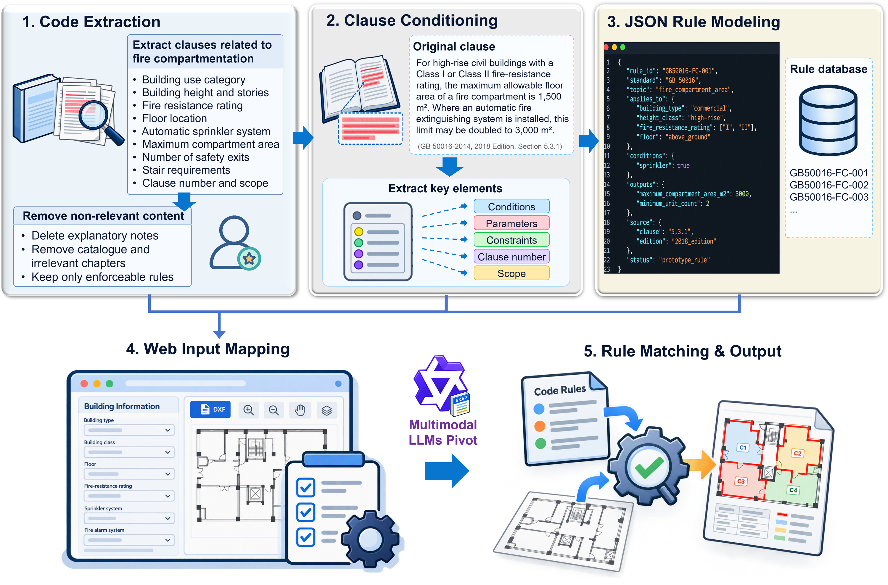
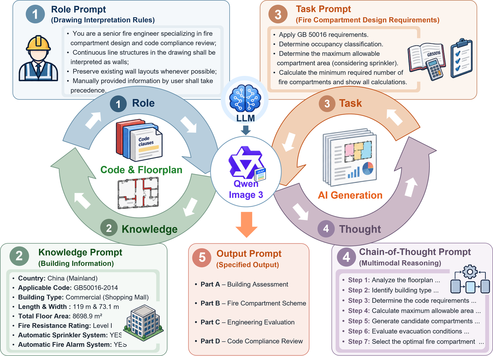

1 Research Centre for Smart Urban Resilience and Firefighting, Department of Building Environment and Energy Engineering, The Hong Kong Polytechnic University, Hong Kong
2 Research Institute for Sustainable Urban Development, The Hong Kong Polytechnic University, Hong Kong
3 Key Laboratory of Civil Engineering Safety and Durability of Ministry of Education, Tsinghua University, Beijing 100084, China
4 Department of Fire Protection Engineering, University of Maryland, College Park, MD, USA
5 Arup Australia Services Pty Ltd, Sydney, Australia
6 Department of Urban Management, Kyoto University, Kyoto 615-8246, Japan
# Joint first authors. * Corresponding authors.
Fire compartmentation design requires coordinated interpretation of building geometry, regulatory requirements, and engineering judgment, relying heavily on manual expert work with high labor and time costs. This study presents a web-based Engineering Knowledge-Augmented Prompt (EKAP) framework combining CAD processing, deterministic calculations, structured prompting, and multimodal image generation. Five building floor plans were used to compare image-only generation, generation with regulatory and building information, and generation with the full EKAP framework, producing ten outputs per plan-method combination. The full EKAP method achieved the highest scores across four objective metrics: count-penalized mean Intersection over Union of 71.81%, count-penalized Boundary F-score of 41.29%, building-level IoU of 89.02%, and compartment-count accuracy of 91.80%. In a separate Analytic Hierarchy Process and Fuzzy Comprehensive Evaluation of 15 selected outputs, the full EKAP method received the highest expert score of 87.28 and the most consistent compartment counts, supporting automated fire compartmentation design and smart fire protection.
A 30-second walkthrough from building information and DXF input to a generated fire-compartmentation proposal.

Fig. 2. Workflow for transforming GB 50016 provisions into executable fire-compartmentation constraints.

Fig. 4. Construction and organization of the EKAP prompt for fire-compartmentation generation.